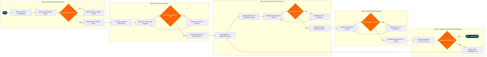

| Step | L4 Step Name | KPI / Target | Pain Point / Risk | Gate |
|---|---|---|---|---|
| 1.1 | Extract historical booking & ticketing data | Data completeness ≥ 99% of expected PNR records | Altéa PSS booking history exports can lag 4–6 hours in peak windows, misaligning the daily forecast cycle and causing stale AU recommendations to persist in NRM overnight | |
| 1.2 | Ingest external demand & traffic signals | External signal ingestion latency ≤ 2 hours from OAG publish | MIDT data covers only GDS-booked itineraries, creating blind spots for NDC and direct-channel bookings — up to 30% of volume on some LCCs — leading to systematic under-forecasting on digitally distributed routes | |
| 1.3 | Validate & cleanse data for anomalies | Data quality score ≥ 95%; outlier rows flagged < 2% of total | COVID-era booking collapse and recovery create structural breaks in training data; models trained on pre-2020 history without explicit break-point adjustment produce load-factor forecasts biased 6–12 pts below actuals on leisure routes | ⚠ |
| 1.4 | Segment data by O&D, cabin and booking curve | Segment granularity covers ≥ 95% of revenue-bearing O&D pairs | Thin O&D markets (< 200 observations per departure) produce statistically unstable booking curves; SkyCAST defaults to network-level priors which can over-smooth volatile new-route ramp-ups | |
| 2.1 | Identify constrained booking observations | Constrained-observation detection rate ≥ 90% vs manual audit sample | NRM does not retain intra-day AU change history at sufficient granularity; when AUs were changed multiple times within a day, the system only logs end-of-day state, causing the unconstraining algorithm to miss intermediate constraints | |
| 2.2 | Apply EM unconstraining to constrained series | Unconstraining variance (CV) ≤ 5% on routes with ≥ 90% load factor | Expectation-Maximisation unconstraining can diverge on very high-load routes (LF > 95%) where almost every observation is constrained — NRM falls back to simple censored-mean imputation which understates true demand by 8–15% | ⚠ |
| 2.3 | Validate unconstrained demand estimates | Unconstrained mean ≤ 1.5× constrained mean on non-peak markets | Overly aggressive unconstraining inflates unconstrained demand estimates, causing the optimiser to open excess inventory and erode yield on near-full flights — requires manual override on seasonal peak routes | |
| 3.1 | Select forecasting model type per market | Model selection logic applied to 100% of active O&D pairs within 1 hour of data readiness | SkyCAST model selection heuristics default to additive models for thin markets regardless of demand variability; high-leisure volatile routes on short-haul thin sectors are systematically misconfigured, requiring manual analyst overrides each cycle | |
| 3.2 | Apply special-event & seasonality overlays | Special-event adjustment coverage: ≥ 85% of Top-100 events per quarter captured before forecast run | Event calendar maintenance is manual and decentralised — network RM team and regional market managers each maintain separate lists, causing duplicate or conflicting adjustments when the same event spans multiple O&D pairs | |
| 3.3 | Run O&D demand forecast in SkyCAST | Forecast MAPE ≤ 12% across all O&D pairs; P90 forecast coverage ≥ 80% of actuals | SkyCAST batch forecast runs for a large network (500+ daily departures) can exceed the available processing window on peak planning days, causing downstream NRM optimisation to run on partially stale forecasts | ⚠ |
| 3.4 | Disaggregate O&D forecast to fare-class level | Fare-class forecast disaggregation completed within 30 min of O&D forecast publish | Fare-class demand share curves are estimated from historical booking curves; when airlines reprice aggressively (e.g. adding or retiring fare classes mid-season), the share curves become stale and misdirect inventory allocation toward retired buckets | |
| 4.1 | Analyst review of system-generated forecasts | Analyst review completed within 4 hours of forecast publication; < 15% of O&D pairs require manual override | NRM forecast review UI surfaces only summary metrics per market; analysts cannot drill to individual booking-curve segments without exporting to Excel, slowing root-cause investigation and increasing override latency | ⚠ |
| 4.2 | Apply market-level manual forecast adjustments | Override accuracy (post-departure MAPE for overridden markets) ≤ 10% | Manual overrides are not systematically back-tested; analysts who override frequently cannot tell whether their interventions improve or degrade forecast accuracy versus the unmodified system forecast, making governance of override behaviour impossible | |
| 4.3 | Publish approved demand forecast to NRM | Forecast publish latency ≤ 30 min from analyst sign-off; 100% of departures within 330-day booking window covered | NRM forecast publish is a full-replace operation — partial updates are not supported; if a publish job fails mid-run (e.g. network timeout), the system may hold a mix of new and prior-cycle forecasts, causing inconsistent AU recommendations until the next full cycle | |
| 5.1 | Track post-departure forecast accuracy | Rolling 30-day network MAPE ≤ 12%; bias (mean signed error) within ±2% | Post-departure actuals are available only after PSS ticket coupon reconciliation (typically T+2 days), creating a 48-hour blind spot between departure and accuracy reporting that delays identification of systematic forecast failures on new routes | |
| 5.2 | Detect systematic bias or model drift | Bias alert triggered when mean signed error exceeds ±3% for ≥ 5 consecutive departures on same O&D | Tableau dashboards for RM forecast tracking are maintained by a separate analytics team; model drift alerts depend on manual dashboard reviews rather than automated statistical process control, meaning bias can persist for 2–3 weeks before analyst intervention | ⚠ |
| 5.3 | Trigger model recalibration & parameter update | Recalibration cycle completed within 48 hours of bias-alert trigger; post-recalibration MAPE improvement ≥ 2 percentage points | SkyCAST model parameter updates require a full re-training run on the rolling 2-year history window; on large networks this can take 6–8 hours, blocking the daily forecast cycle if recalibration is triggered mid-day rather than during the overnight batch window |